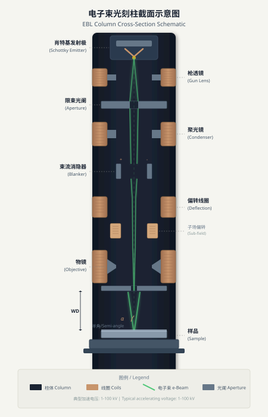
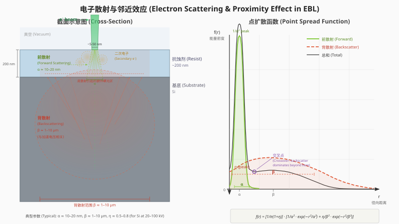

电子束光刻（Electron Beam Lithography, EBL）是目前分辨率最高、最灵活、应用最广泛的纳米图案化技术。电子与光子一样携带能量，可以转移给对能量敏感的聚合物抗蚀剂，引起链断裂或交联反应，形成表面浮雕图案。EBL从1960年代的扫描电子显微镜（Scanning Electron Microscope, SEM）发展而来。1970年代初期，EBL已经能够图案化小至60 nm的特征。排除所有其他因素，EBL的极限分辨率仅受限于电子束直径，已被实验证明可小至1.5 nm。
电子的波长由德布罗意关系给出：
$$\lambda = \frac{1.2}{\sqrt{V}} \text{ (nm)}$$
其中 $V$ 为电子能量（eV）。100 eV电子的波长仅为1.2埃（0.12 nm），比光学波长短数十万倍。高压电子透射显微镜能看到单个原子，正是因为高能电子具有超短波长。事实上，电子波长本身不是EBL的分辨率限制因素，真正的限制来自电子像差和电子在抗蚀剂中的散射。
EBL通过电子束直接在抗蚀剂上曝光图案，即"直写"（Direct Write），不需要掩模。其高分辨率图案化能力使该技术历经六十余年仍然不可或缺，在IC制造之外的众多领域广泛应用。然而EBL的根本局限是低吞吐量：光学光刻标准吞吐量至少为每小时60片晶圆，单个50 nm电子束要达到同等吞吐量，需要20 km/s的扫描速度和2.5 ps的束流驻留时间。当前没有任何单束EBL系统能实现如此高的扫描速度。以目前高斯束系统的扫描速度和束流水平，一片8英寸晶圆需要数十小时才能曝光完成。
EBL在IC制造技术链中有一个牢固的位置：光掩模制造。在激光直写光刻出现之前，EBL是唯一的掩模制造工具。目前全球近半数光掩模仍由可变形状束（Variable Shaped Beam, VSB）电子束工具制造。随着RET掩模复杂度的增加，多束写入器成为首选，EBL工具在EUV掩模修复中同样不可或缺。
电子光学描述电子在电磁场中的运动。电子光学与光学的基本差异在于：光学透镜的折射率是空间坐标的不连续函数，而电磁透镜的折射率由电磁场分布决定，是空间坐标的连续函数。光学系统可通过任意改变透镜曲面来消除几何像差，但电磁场不能任意改变。一个典型的光学系统可能包含上百个透镜用于校正像差，而电磁成像系统仅有几个透镜。
所有EBL系统和电子显微镜都使用磁透镜聚焦电子束，因为磁透镜可通过高电流产生强聚焦场。静电透镜受电压差限制，一般聚焦能力有限。

四种主要电子发射源的性能比较：
| 参数 | 热阴极 W | 热阴极 LaB₆ | 冷场发射 W | Schottky场发射 ZrO/W |
|---|---|---|---|---|
| 工作温度 (K) | 2800 | 1900 | 300 | 1800 |
| 阴极半径 (μm) | 60 | 10 | <0.1 | <1 |
| 虚拟源半径 (nm) | 15000 | 5000 | 2.5 | 15 |
| 发射电流密度 (A/cm²) | 3 | 30 | 17000 | 5300 |
| 亮度 | 10⁴ | 10⁵ | 2×10⁷ | 10⁷ |
| 阴极能量展宽 (eV) | 0.59 | 0.40 | 0.26 | 0.31 |
| 枪出口能量展宽 (eV) | 1.5-2.5 | 1.3-2.5 | 0.3-0.7 | 0.35-0.7 |
| 束流噪声 (%) | 1 | 1 | 5-10 | 1 |
| 发射电流漂移 (%/hr) | 0.1 | 0.2 | 5 | <0.5 |
| 真空要求 (Torr) | ≤10⁻⁵ | ≤10⁻⁶ | ≤10⁻¹⁰ | ≤10⁻⁸ |
| 阴极寿命 (h) | 200 | 1000 | 2000 | 2000 |
冷场发射源具有最小的虚拟源（2.5 nm）和最高的发射电流密度（17000 A/cm²），是所有高性能电子显微镜的首选。但EBL系统很少使用冷场发射源，因为其发射表面易吸附气体原子导致束流噪声和漂移过大（噪声5-10%，漂移5%/hr）。EBL依赖稳定的发射电流来提供一致的曝光剂量。
Schottky场发射阴极（也称热场发射阴极）通过加热降低表面气体吸附，兼具场发射源的大部分优点和低噪声低漂移特性，是当前EBL系统的主流选择。Georgia Tech EBL设施的Elionix ELS-G100系统使用ZrO/W热场发射源。
电子束在基底表面的光斑尺寸不仅是电子源的缩小像，还包含各种像差分量：
$$d = \sqrt{dg^2 + ds^2 + dc^2 + dd^2}$$
其中：$dg = dMv$（无像差光斑，$dv$ 为虚拟源直径，$M$ 为缩小率）；$ds = \frac{1}{2}Cs\alpha^3$（球差，$Cs$ 为球差系数，$\alpha$ 为束流会聚角）；$dc = Cc\alpha\frac{\Delta V}{V}$（色差，$Cc$ 为色差系数，$\Delta V$ 为能量展宽）；$dd = \frac{0.6\lambda}{\alpha}$（衍射极限）。
高分辨率EBL需要：高束流能量（减小色差和空间电荷效应）、小扫描场（减小偏转像差）、低束流电流（减小空间电荷效应引起的束流展宽）。在20 keV和50 keV下，束流直径随束流电流的增大而急剧增大。100 keV是EBL最适合的能量，因为更高电压使电子柱设计制造极其困难，且超过约120 keV可能损伤硅晶格和半导体器件。
聚甲基丙烯酸甲酯（Polymethylmethacrylate, PMMA）是50多年前发现的正性电子束抗蚀剂，至今仍在广泛使用。PMMA是迄今为止分辨率最高的正性电子束抗蚀剂，最小特征尺寸可达4-5 nm（20多年前已被证明），甚至在像差校正STEM中实现了1.7 nm线条。商用PMMA通常有950K和495K两种分子量，高分子量一般灵敏度较低但分辨率更高。
PMMA的标准工艺流程（Georgia Tech EBL设施）：
| 步骤 | 条件 |
|---|---|
| 旋涂 | 60秒 |
| 烘烤 | 180°C热板，90秒 |
| 曝光 | 参见剂量灵敏度曲线 |
| 显影 | 浸泡2分钟 |
| 冲洗 | IPA 30秒 |
| 吹干 | 氮气 |
显影剂选择：
| 显影剂 | 比例 | 显影时间 | 分辨率级别 |
|---|---|---|---|
| IPA:H₂O | 3:1 | 2 min | 标准 |
| MIBK:IPA | 1:1 | 2 min | 标准 |
| MIBK:IPA | 1:3 | 2 min | 高 |
| 冷显影 | 任意 | 30 sec | 最高（10°C以下） |
PMMA去除可通过丙酮浸泡、O₂等离子体处理或Piranha清洗实现。PMMA的主要优势是分辨率极高、去除容易且成本低廉，是Liftoff工艺的首选抗蚀剂。
ZEP-520A是日本ZEON公司开发的正性电子束抗蚀剂，分辨率与PMMA相当但灵敏度高约3倍（仅需PMMA三分之一的曝光剂量），等离子体刻蚀抗性约为PMMA的2倍。缺点是成本超过PMMA的25倍。
低温显影可进一步增强ZEP-520A的分辨率。在-17°C显影温度下，30 keV束流能量可获得13 nm线条。低温显影对ZEP-520A还有一个特殊优势：显著改善线边缘粗糙度。-4°C显影的ZEP-520A线条LER明显优于室温显影。
氢倍半硅氧烷（Hydrogen Silsesquioxane, HSQ）是最佳的负性电子束抗蚀剂。HSQ最初由Dow Corning开发为可流动氧化物（Flowable Oxide, Fx-12），1998年首次报道用于EBL。HSQ经EBL曝光后转化为二氧化硅。
HSQ可常规实现亚10 nm抗蚀剂线条特征。在30 nm厚HSQ中100 keV曝光已实现5-6 nm孤立线条，超薄（10 nm）HSQ层中可获得亚10 nm密集线条。虽然PMMA的分辨率与HSQ相当甚至略优，但PMMA在亚10 nm尺寸的LER非常高，而HSQ在亚10 nm分辨率下的LER低得多。HSQ的刻蚀抗性因其无机本质也远高于PMMA。
HSQ的工艺要点：
| 参数 | 低对比度工艺 | 高对比度工艺 | 最高对比度工艺 |
|---|---|---|---|
| 涂后烘烤 | 250°C, 2 min | 无或80°C, 4 min | 无或80°C, 4 min |
| 曝光剂量 | ~1000 μC/cm² | ~1500 μC/cm² | ~2000 μC/cm² |
| 显影剂 | 2.3% TMAH | 25% TMAH | 25% TMAH |
| 显影温度 | 室温 | ~21°C | 40-50°C |
| 显影时间 | 70秒 | 30秒 | 30秒 |
HSQ是涂覆到曝光时间敏感的材料，最好在涂覆后立即曝光。商用HSQ保质期为6个月。干燥粉末形式的HSQ（AQM-HSQ）具有无限保质期但性能与Dow Corning HSQ相同。HSQ去除需用HF或缓冲氧化物刻蚀液（BOE）。
HSQ的显影温度与PMMA和ZEP相反：高温显影（40-50°C）可增强对比度和分辨率，低温显影反而降低对比度。但60°C以上显影温度会导致曝光结构破坏。
ma-N 2403是一种负性聚合物抗蚀剂，适用于玻璃基底上的Liftoff工艺，可用有机溶剂去除（不需HF类刻蚀剂）。分辨率低于HSQ，可能存在粘附问题。具有DUV可曝光能力。
| 参数 | PMMA (950K) | ZEP-520A | HSQ | ma-N 2403 |
|---|---|---|---|---|
| 极性 | 正性 | 正性 | 负性 | 负性 |
| 相对剂量 | 1X（基准，~100 μC/cm²） | ~0.8X | ~3X | - |
| 刻蚀抗性 | 基准 | ~2X PMMA | 优异（SiO₂） | - |
| 分辨率 | 优异（~5 nm） | 优异（~10 nm） | 最佳（6.5 nm） | 较低 |
| 成本 | 低 | >25X PMMA | 高 | 中等 |
| 去除方式 | 丙酮/1165 | 有机溶剂 | HF/BOE | 有机溶剂 |
| 最佳应用 | Liftoff | 快速写入，刻蚀 | 最高分辨率，刻蚀掩模 | 玻璃上Liftoff |
高能电子穿入固体材料时与原子和电子发生碰撞。弹性散射（Elastic Scattering）：入射电子与材料原子碰撞，不损失能量但改变方向。非弹性散射（Inelastic Scattering）：入射电子与材料电子碰撞，将部分能量转移给材料电子，正是这部分转移的能量引起抗蚀剂聚合物材料的链断裂或交联反应。
电子散射过程可以这样理解：电子束中的电子在材料原子间持续进行弹性散射并不断改变飞行方向，在两次弹性散射之间发生非弹性散射，将束流能量逐渐沉积到材料中。
散射产生两类效应：前向散射（Forward Scattering）使电子在抗蚀剂中向前行进时逐渐展宽；背散射（Backscattering）使穿入基底的电子部分返回抗蚀剂层。两者都导致曝光区域超出束流着陆点的原始面积。

Monte Carlo模拟可计算电子散射和能量沉积。50000-100000个电子的模拟可产生统计可靠的结果。能量沉积分布由点扩展函数（Point Spread Function, PSF）描述，通常可用双高斯函数近似：前向散射部分产生窄而高的峰，背散射部分产生宽而低的尾部。
三个因素强烈影响电子散射：
电子散射导致沉积能量扩展到相邻区域，密集特征过度曝光，孤立特征欠曝光，产生所谓的形间和形内邻近效应。校正方法有三种：
最简单有效的邻近效应减小措施是提高束流能量和减小抗蚀剂厚度。100 keV曝光1 μm PMMA时几乎看不到邻近效应，而20 keV同等条件下邻近效应非常显著。
二次电子是被高能初级电子从材料原子撞出的电子，能量通常在数百eV以下。400 eV电子可行进约12 nm，200 eV电子行进约5 nm。二次电子沿初级电子路径的垂直方向散射，展宽能量沉积范围。
二次电子曾被认为将EBL分辨率限制在约10 nm。但这一结论不完全正确：低灵敏度抗蚀剂可以抑制二次电子和低能背散射电子的曝光效应；冷显影和超声辅助显影等工艺增强技术可进一步提高分辨率。
矢量扫描（Vector Scan）中电子束仅扫描曝光图案区域，光栅扫描（Raster Scan）中电子束始终扫描整个场，仅在图案位置开启束流消隐器。矢量扫描系统分辨率高（≤3 nm束流光斑）但速度较慢（最快50 MHz），是纳米级光刻的主力。光栅扫描系统速度可达500 MHz，传统上用于制造光掩模。
偏转器的偏转范围有限，通常从几百微米的子场到几毫米的主场。大于场尺寸的图案必须分片。现代商用EBL系统配备激光控制工件台，子场拼接和主场拼接精度可控制在25 nm以内。Georgia Tech的Elionix ELS-G100在100微米场时拼接精度为15 nm，套刻/对准精度为20 nm。
对于曲线形图案（如光学波导），传统笛卡尔扫描系统由于像素化而无法获得高精度。固定束移动台（Fixed Beam Moving Stage, FBMS）技术中，电子束保持静止，通过连续移动工件台形成曝光图案，可图案化任意曲线形状且无拼接误差。
| 系统 | 厂商 | 束流能量 | 分辨率 | 特点 |
|---|---|---|---|---|
| EBPG Plus | Raith | 100 keV | <10 nm | 高端高斯束直写 |
| JBX-9500FS | JEOL | 100 keV | <10 nm | 高端高斯束直写 |
| nB5 | NanoBeam | 100 keV | 6 nm | 高分辨率专用 |
| Raith150 Two | Raith | 100 eV-30 keV | <10 nm | 中端，兼容SEM |
| ELS-G100 | Elionix | 25/50/100 kV | 6 nm | 1.8 nm束斑，100 MHz |
高端系统价格达数百万美元。Raith还提供ELPHY升级套件，可将几乎任何SEM转换为EBL工具。SEM转换系统的局限包括缺乏束流消隐功能、偏转线圈不适合矢量扫描（稳定时间长）以及工件台精度有限（1-5 μm）。
超声辅助显影对PMMA分辨率的增强效应于1993年发现。此前普遍认为EBL分辨率极限约10 nm。当曝光区域极小（<10 nm），约2 nm大小的PMMA分子因分子间力而被困在固态PMMA中难以溶解。超声搅拌提供额外能量，帮助松动和溶解这些被困分子。在超声辅助下，PMMA中实现了4 nm线条。
超声辅助仅对高分子量PMMA有效，证明显影过程高度依赖于抗蚀剂材料特性。
冷显影是另一种分辨率增强方法。在4-8°C MIBK+IPA（1:3）显影剂中，30 keV束流能量可获得亚10 nm PMMA线条。冷显影通过降低分子动能抑制PMMA分子活动，只有电子能量沉积最高的中心区域才能被显影，从而提高分辨率。
ZEP-520A同样受益于冷显影：-17°C下可获得13 nm线条，且LER显著改善。
显影剂浓度也影响分辨率：
| MIBK-IPA比例 | 分辨率 | 灵敏度 |
|---|---|---|
| 1:3 | 极高 | 低 |
| 1:2 | 很高 | 中 |
| 1:1 | 高 | 高 |
| 纯MIBK | 低 | 很高 |
HSQ的温度效应与PMMA和ZEP相反：高温显影（40-50°C）增强HSQ的对比度和分辨率，但60°C以上会破坏曝光结构。
低灵敏度抗蚀剂可有效抑制二次电子和低能背散射电子的曝光效应。PSF的长尾（由二次电子和背散射电子引起）仅在抗蚀剂灵敏度很高时才对图案产生显著影响。例如，灵敏度极高的SU-8（~1 μC/cm² at 50 keV）在曝光图案之间产生明显的抗蚀剂残留，这是背散射电子双侧累积效应的结果。
VSB通过两个方形孔径的重叠投影形成可变大小的束斑，步进到每个图案段进行曝光，显著提高了曝光速度。典型VSB系统工作在50 keV，基本束斑2 × 2 μm。主要系统包括JEOL的JBX系列、Vistec的SB系列和NuFlare的EBM系列，目标从22 nm节点至7 nm节点的掩模制造（掩模特征为IC特征的4倍）。
193 nm和EUV光刻复杂度的不断增加，特别是ILT对曲线形特征的偏好，使VSB写入时间急剧增长。ILT掩模的VSB写入时间可能超过30小时，而多束写入器可减至10小时以下。
IMS Nanofabrication（奥地利）开发的MBMW-101是世界首台高通量多束掩模写入器。系统使用可编程孔径板系统（Programmable Aperture Plate System, APS），将宽幅5 keV电子束分割为数千个2.5 μm小束。每个小束由集成偏转电极独立控制通断。不需要的小束被轻微偏转并在投影光学系统的交叉点处滤除。通过的小束经200倍缩小投影到基底形成12.5 nm光斑，并加速到50 keV。总束数可从256K到100万，可同时图案化数百万个特征。
| 序号 | 条件 | 原理 |
|---|---|---|
| 1 | 使用高电子能量（100 keV） | 减小前向散射，增大背散射范围，降低色差和空间电荷效应 |
| 2 | 选择小孔径 | 减小球差（正比于束流会聚角的三次方） |
| 3 | 使用低束流电流 | 减小空间电荷效应 |
| 4 | 选择小扫描场 | 减小偏转相关像差 |
| 5 | 使用低灵敏度抗蚀剂 | 抑制二次电子和背散射电子的曝光效应 |
| 6 | 使用薄层抗蚀剂 | 减小前向散射引起的邻近效应 |
| 7 | 优化抗蚀剂工艺 | 冷显影、超声辅助等增强分辨率 |
| 8 | 避免高密度图案 | 密集图案的邻近效应校正极为困难 |
| 9 | 避免高密度/导电性差的基底 | 高密度基底增加背散射；导电性差的基底导致充电效应 |
| 10 | 维持稳定环境 | 低振动、低电磁干扰、低温度波动 |
实验已证明EBL分辨率仅受电子束直径限制。使用像差校正STEM（200 keV，0.5 nm束斑），在5 nm厚SiNₓ薄膜上的7 nm厚PMMA中实现了1.7 nm线条特征。另一实验在10 nm厚SiNₓ薄膜上的10 nm厚HSQ中实现了2 nm特征。实际上EBL图案化常用抗蚀剂PMMA或HSQ的极限分辨率约为4-5 nm，因为图案必须通过刻蚀或Liftoff转移到基底。
EBL的根本限制是逐点扫描的低吞吐量。以高斯束系统当前的扫描速度和束流电流水平，一片8英寸晶圆需要数十小时曝光。22 nm节点IC光掩模的EBL写入时间约80小时。
EUV光刻的成熟和采用彻底终结了EBL直写进入IC量产的希望。高通量EBL目前仅服务于掩模制造领域：VSB用于传统矩形特征掩模，MBMW用于ILT曲线形特征掩模（写入时间从VSB的30+小时降至10小时以下）。
1. 任何新图案设计都应从剂量测试开始：对同一图案在不同曝光剂量下进行系列曝光，确定最优剂量范围。
2. 对于亚50 nm线条特征，单线扫描（Single-pass Exposure）常被采用，线宽由该次扫描的曝光剂量决定。
3. 关键部分的图案应尽量安排在曝光场内部，避免放置在场边界处产生拼接误差。
4. 高分辨率图案化优先选择小孔径和低束流电流，必要时牺牲速度换取精度。
5. 铜的纳米级图案化中，铬作为粘附层优于钛；银材料不兼容1165溶剂（N-甲基吡咯烷酮），Liftoff必须使用室温丙酮。
Georgia Tech EBL设施运营的Elionix ELS-G100是一台100 kV电子束光刻系统。高斯束斑直径1.8 nm，加速电压可选25、50或100 kV，束流电流范围20 pA至100 nA，扫描速度100 MHz。100 kV下最大场为1 mm，最小图案线宽6 nm，100微米场时拼接精度15 nm、套刻精度20 nm。可处理最大8英寸晶圆，最小至毫米级样品。系统使用ZrO/W热场发射电子源，应用范围涵盖直接纳米图案化、光掩模制造和SEM成像。
1. EBL是分辨率最高的纳米图案化技术，电子波长不是限制因素（100 eV时仅0.12 nm），实际限制来自像差、散射和抗蚀剂特性。极限分辨率约4-5 nm（常用抗蚀剂），实验室最小记录1.7 nm。
2. 电子源方面，Schottky场发射阴极（ZrO/W）是EBL系统的主流选择，兼具场发射的小虚拟源和热阴极的低噪声稳定性。100 keV是最优工作能量。
3. 主要抗蚀剂中，PMMA（正性，~100 μC/cm²，分辨率~5 nm）适用于Liftoff和高分辨率应用；ZEP-520A（正性，灵敏度3X PMMA，刻蚀抗性2X）适用于快速写入；HSQ（负性，~1000-2000 μC/cm²，分辨率~6 nm）适用于最高分辨率和刻蚀掩模。
4. 邻近效应由前向散射和背散射引起，可通过剂量校正、图案偏置或GHOST方法校正。增大束流能量（100 keV）和减小抗蚀剂厚度是最简单有效的邻近效应抑制手段。
5. 分辨率增强工艺包括超声辅助显影（PMMA中实现4 nm）、冷显影（ZEP-520A中-17°C获得13 nm并改善LER）和高温显影（HSQ在40-50°C增强对比度）。
6. EBL的根本瓶颈是吞吐量。当前仅服务于掩模制造（VSB和MBMW）和研发直写。IC量产完全由光学光刻（193i+多重图案化和EUV）承担。多束掩模写入器可将ILT掩模写入时间从30+小时降至10小时以下。
电子波长不是限制因素（100 eV时仅0.12 nm），实际限制来自像差、散射和抗蚀剂特性。极限分辨率约4-5 nm。
Schottky场发射阴极（ZrO/W）是EBL系统主流选择，兼具小虚拟源和低噪声稳定性，优于冷场发射源。
前向散射和背散射导致能量沉积扩展。最简单有效的抑制手段：提高束流能量至100 keV，减小抗蚀剂厚度。
EBL根本限制是逐点扫描的低吞吐量。一片8英寸晶圆需数十小时曝光。当前仅服务于掩模制造和研发直写。